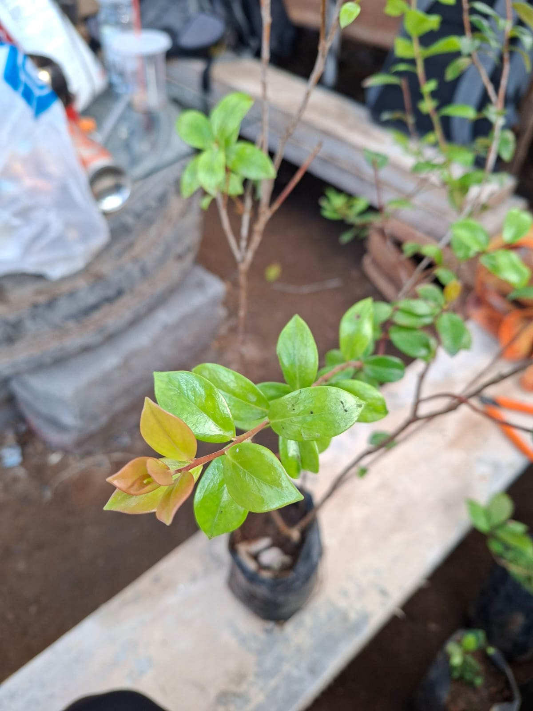

KonservasiCantigi Gunung
Vaccinium varingifoliumNama daerah: Cemara gunung. Pohon asli Jawa hingga Kepulauan Sunda Kecil yang dikenal tahan pada kondisi terbuka. Tajuk dan perakarannya berpotensi digunakan sebagai penahan angin dan pendukung pemulihan lahan, dengan penempatan tetap menyesuaikan kondisi tapak.